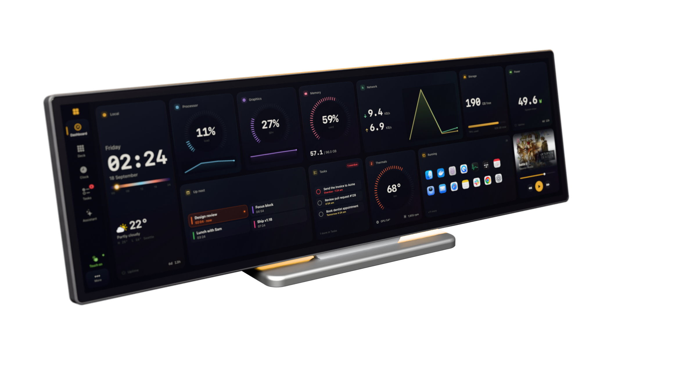
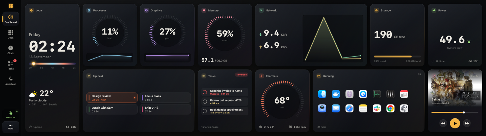
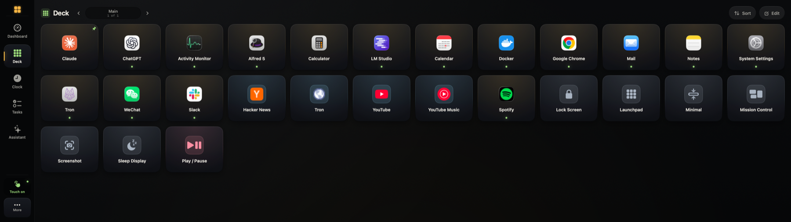
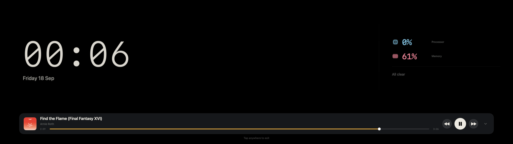
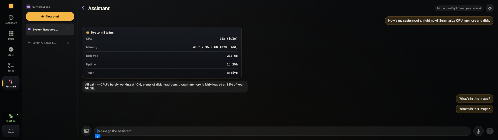
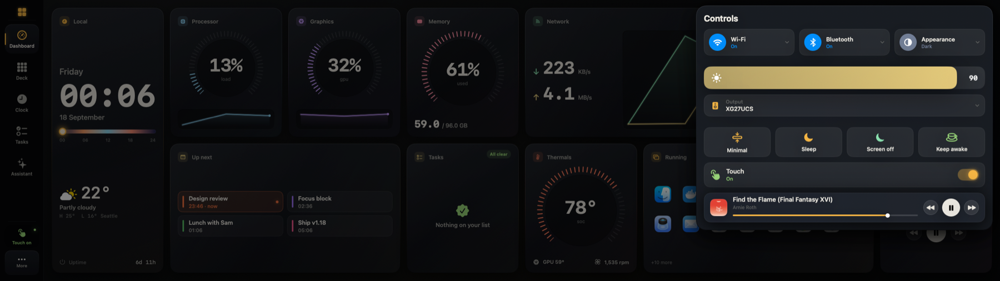
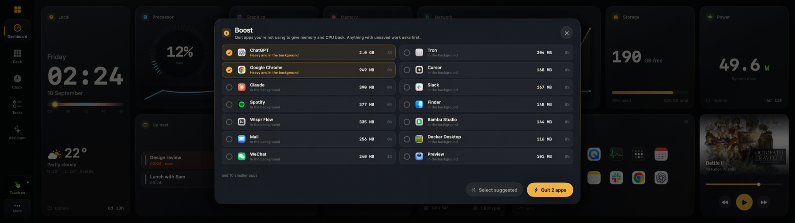
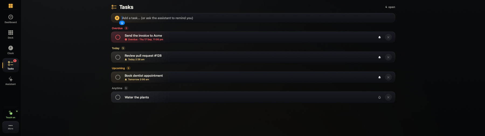

Free and open source · macOS 14 or later · v1.18
Your Mac,
on the Edge.
Turn the Corsair Xeneon Edge into a touch dashboard, launcher and control deck. Live instruments, a Stream-Deck-style launcher, an ambient clock, tasks, an assistant and a phone remote, all built for a 2560 × 720 strip.
Tap the screen to change pages. Move the mouse to look around.

Built for the strip
Every page is drawn for 2560 × 720 and a finger. These are real captures from the panel.







What it does
One app, one panel. The strip stops being a second monitor and starts being a control surface.
- Dashboard
Instruments that stay readable at arm's length
Processor, graphics, memory, network, storage, power and thermals as tick-ring gauges with history, plus weather, calendar, tasks, focus, devices, quick actions and what's playing. Tap a gauge for the top processes.
- Deck
A launcher you build with your thumb
Big tiles that open apps, sites, hotkeys, shell commands, webhooks and media keys. Chain them into one tap. Keep separate pages for work, streaming and play, and pin an app to open on a chosen display.
- Ambient
A night clock when you're not looking
Pull down from the top and the strip drops to a quiet clock with the next event, the weather and the music. Tap to bring the full panel back.
- Assistant
An assistant that can actually do things
Point it at any OpenAI-compatible endpoint, local models included. It launches apps, checks the system, searches the web, sets reminders and shows its work as cards. Anything risky waits for your approval.
- Remote
The same panel on your phone
Scan a code and the deck, dashboard and pages are on your phone over your own Wi-Fi. The link carries a private key you can rotate any time.
- Touch
A real touch driver, no kernel extension
The app reads the Edge's digitizer directly, so taps land where you touch, two fingers scroll and pinch, edge swipes change screens, and when your finger lifts the pointer goes back to where you were working.
- Quiet
Two percent of a core, and updates that wait
Gauges animate on the render server, nothing polls that doesn't have to, and new versions download in the background and install themselves when you're away.
See it move
Thirty seconds on the panel.
Install in a minute
Notarized by Apple. Nothing runs as root.
- 1
Download and move it to Applications
The zip holds one app. Drop it into Applications and open it.
- 2
Allow Input Monitoring and Accessibility
Reading the touch panel and moving windows need these two. The app asks, and if macOS won't prompt it opens the exact Privacy & Security pane and confirms the moment you flip the switch.
- 3
Let it fix the resolution
macOS often picks a scaled mode for the Edge. The Toolbox notices and switches the panel to its native 2560 × 720 with one tap, and undoes it if it looked wrong.
Requires a Corsair Xeneon Edge and macOS 14 or later. Apple silicon and Intel.